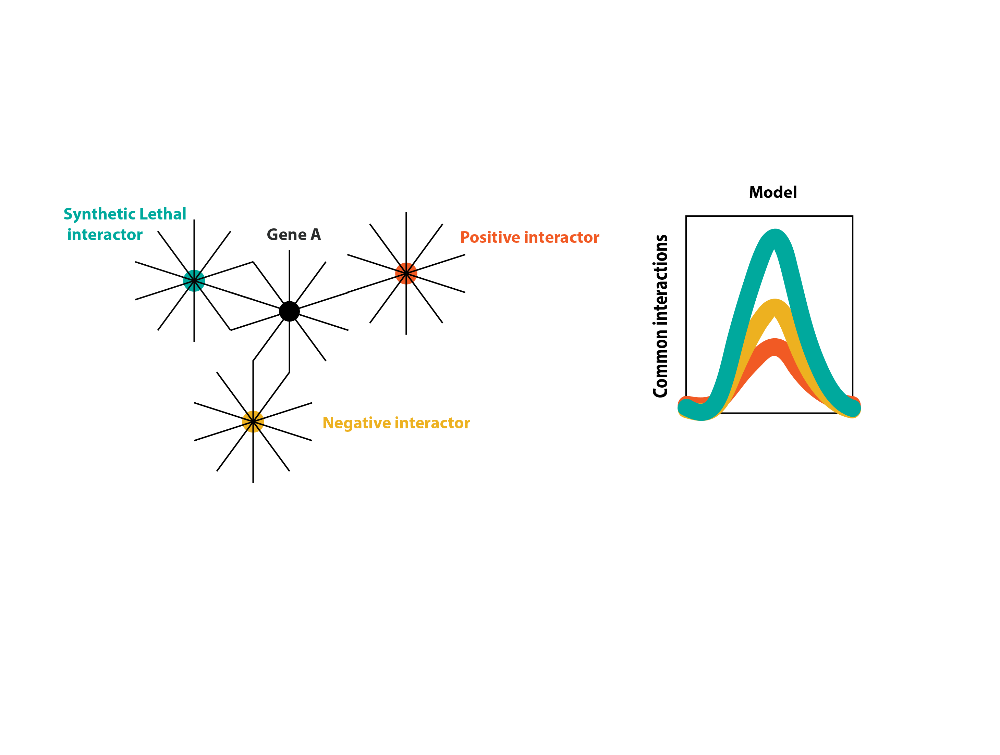
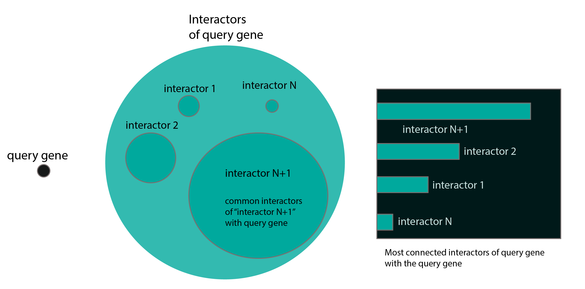
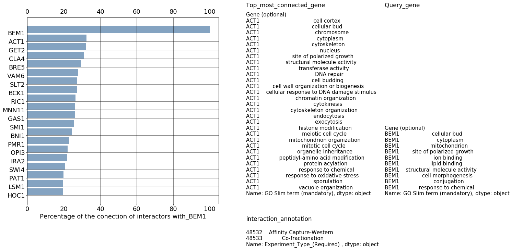

9. 16-07-2019-Script in python to find the most connected genes to a query gene. :milky_way:¶
9.1. Goal¶
From the physical and genetic interactors of a specific gene, I am interested in finding which of the interactors of the interactors are also interactors of the initial query gene.
This calculation can maybe triggers hypothesis about how is the correlation in the amount of connectivity of one gene to another gene and the type of interactions they are more prone to share.
Perhaps, it is like this: 
The following picture depicts what I am looking for in the SGD database for every gene of interest: 
The following python code depicts what I have done, that can be reused and improved for other purposes.
10. Python code¶
import pandas as pd
import numpy as np
from collections import defaultdict
import seaborn as sns
import matplotlib.pyplot as plt
%matplotlib inline
## good website to study dataframes
#https://www.shanelynn.ie/using-pandas-dataframe-creating-editing-viewing-data-in-python/
data=pd.read_excel(r'C:\Users\linigodelacruz\Documents\PhD_2018\Documentation\Calculations\data_sgd\Interaction_data_sgd_downloads.xlsx',header=17,encoding="utf-8-sig")
col_label=data.columns.values
data_go=pd.read_excel(r'C:\Users\linigodelacruz\Documents\PhD_2018\Documentation\Calculations\data_sgd\slim_goterms_data_sgd_downloads.xlsx',header=14,encoding="utf-8-sig")
col_label_go=data_go.columns.values
data_go.set_index(col_label_go[1],inplace=True)
d2 = defaultdict(dict)
query=['BEM1'] # here you can put the gene of interest
# giant for loop
names1 = query
i=-1
for query1 in names1:
#filtering the table just for the value of the query
q1 = data[data['Standard_Gene_Name_(Bait)']==query1]
q1_interact=q1[col_label[3]].unique()
# a for loop for all the interactors of query
for query2 in q1_interact:
q2=data[data['Standard_Gene_Name_(Bait)']==query2] #these are get_query(q1[i])
q2_interact=q2[col_label[3]].unique()
d = defaultdict(int)
common = []
for name1 in q2_interact:
if name1 in q1_interact: # if a gene interactor of the query1 is in interactors of query 2
common.append(name1)
d[name1] += 1
d2[query1, query2]["common"] = common
d2[query1,query2]["names of genes"]=query2
d2[query1, query2]["n_common"] = len(common)
d2[query1, query2]["len_i_1"] = len(q1)
d2[query1, query2]["len_i_2"] = len(q2)
if len(q1)==0:
d2[query1, query2]["% of query subset"] = 0
else:
d2[query1, query2]["% of query subset"] = len(d)/len(q1_interact) *100
if len(q2)==0:
d2[query1, query2]["% of query 2 subset "] = 0
else:
d2[query1, query2]["% of query 2 subset "] = len(d)/len(q2_interact) *100
q1_filt=q1[q1[col_label[3]]==query2]
d2[query1,query2]["interact_annotation"]=q1_filt[col_label[4]]
d2[query1,query2]['GO_slim_query']= data_go.loc[query1][col_label_go[4]]
#d2[query1,query2]['GO_slim_interactors']= data_go[data_go[col_label_go[1]]==query2][col_label_go[4]]
d2[query1,query2]['GO_slim_interactors']= data_go.loc[query2][col_label_go[4]]
df=pd.DataFrame(d2).T
df
| % of query 2 subset | % of query subset | GO_slim_interactors | GO_slim_query | common | interact_annotation | len_i_1 | len_i_2 | n_common | names of genes | ||
|---|---|---|---|---|---|---|---|---|---|---|---|
| BEM1 | ATS1 | 15.2542 | 2.80374 | Gene (optional) ATS1 cytopl... | Gene (optional) BEM1 cellul... | [RPS8A, BEM1, STE50, RVS161, SAC3, ROM2, TPM1,... | 4872 Negative Genetic Name: Experiment_Type... | 415 | 66 | 9 | ATS1 |
| PMT2 | 23.6364 | 8.09969 | Gene (optional) PMT2 ... | Gene (optional) BEM1 cellul... | [PEP1, ECM33, PMT1, RGP1, ERD1, GET2, GLO3, PM... | 5487 Negative Genetic Name: Experiment_Type... | 415 | 143 | 26 | PMT2 | |
| LTE1 | 13.8264 | 13.3956 | Gene (optional) LTE1 ... | Gene (optional) BEM1 cellul... | [CDC24, SWD1, FUS3, UBP14, BEM1, MBP1, BRE1, S... | 5830 Negative Genetic Name: Experiment_Type... | 415 | 367 | 43 | LTE1 | |
| SNC1 | 44 | 3.42679 | Gene (optional) SNC1 Golgi apparat... | Gene (optional) BEM1 cellul... | [SEC17, SEC18, CYK3, ARF1, SWF1, VPS1, ELO3, S... | 7080 Affinity Capture-Western Name: Experim... | 415 | 50 | 11 | SNC1 | |
| CLN3 | 35.7143 | 7.78816 | Gene (optional) CLN3 ... | Gene (optional) BEM1 cellul... | [STE50, MBP1, STE5, RPA14, MNN10, SSD1, IPK1, ... | 7971 Positive Genetic Name: Experiment_Type... | 415 | 106 | 25 | CLN3 | |
| CDC24 | 27.4809 | 11.215 | Gene (optional) CDC24 ... | Gene (optional) BEM1 cellul... | [CDC24, BOI1, BEM1, RDI1, STE5, GIC2, RGA2, SA... | 8231 Synthetic Lethality 8232 Affin... | 415 | 200 | 36 | CDC24 | |
| SWD1 | 18.8811 | 8.41121 | Gene (optional) SWD1 ... | Gene (optional) BEM1 cellul... | [RXT2, STE50, BRE1, RPA14, SAC3, MSN5, SEM1, V... | 10815 Positive Genetic Name: Experiment_Typ... | 415 | 200 | 27 | SWD1 | |
| BUD14 | 26.7442 | 7.16511 | Gene (optional) BUD14 ... | Gene (optional) BEM1 cellul... | [RXT2, RRP7, STE50, TPS2, MTH1, IPK1, SWI4, BE... | 11634 Positive Genetic Name: Experiment_Typ... | 415 | 99 | 23 | BUD14 | |
| PDR3 | 17.5 | 2.18069 | Gene (optional) PDR3 ... | Gene (optional) BEM1 cellul... | [MNN10, SEM1, SWI4, BEM2, MNN11, OPI3, ELM1] | 13524 Two-hybrid Name: Experiment_Type_(Req... | 415 | 41 | 7 | PDR3 | |
| FUS3 | 23.4177 | 11.5265 | Gene (optional) FUS3 ... | Gene (optional) BEM1 cellul... | [CLN3, BUD14, FUS3, BOI1, RXT2, BEM1, STE50, S... | 15220 Affinity Capture-Western Name: Experi... | 415 | 249 | 37 | FUS3 | |
| PEP1 | 15.7895 | 1.86916 | Gene (optional) PEP1 Golgi apparatus PE... | Gene (optional) BEM1 cellul... | [PEP1, PMR1, RIM101, RIC1, RIM21, VPS5] | 15656 Negative Genetic Name: Experiment_Typ... | 415 | 45 | 6 | PEP1 | |
| SEC17 | 23.7624 | 7.47664 | Gene (optional) SEC17 cytop... | Gene (optional) BEM1 cellul... | [SEC18, SWF1, MSN5, GET2, VAM7, IST3, CNB1, YK... | 19834 Co-fractionation Name: Experiment_Typ... | 415 | 114 | 24 | SEC17 | |
| SKT5 | 33.6364 | 11.5265 | Gene (optional) SKT5 ... | Gene (optional) BEM1 cellul... | [RPS8A, CHS3, ECM33, BEM1, STE50, RVS161, CYK3... | 20873 Negative Genetic Name: Experiment_Typ... | 415 | 169 | 37 | SKT5 | |
| RPS8A | 0 | 0 | Gene (optional) RPS8A ... | Gene (optional) BEM1 cellul... | [] | 21501 Negative Genetic Name: Experiment_Typ... | 415 | 5 | 0 | RPS8A | |
| BOI1 | 27.2727 | 4.6729 | Gene (optional) BOI1 cellular b... | Gene (optional) BEM1 cellul... | [EXO84, BEM1, RRP7, MTH1, SEC3, BOI2, BEM2, CD... | 22819 Negative Genetic 22820 Affinity... | 415 | 78 | 15 | BOI1 | |
| NTH2 | 16.6667 | 0.934579 | Gene (optional) NTH2 ... | Gene (optional) BEM1 cellul... | [BEM1, STE50, TPS2] | 24979 Negative Genetic Name: Experiment_Typ... | 415 | 20 | 3 | NTH2 | |
| MNN2 | 36.6197 | 8.09969 | Gene (optional) MNN2 ... | Gene (optional) BEM1 cellul... | [PMT2, MNN2, VAM6, PMT1, ARF1, ERD1, GET2, SEC... | 27420 Negative Genetic Name: Experiment_Typ... | 415 | 82 | 26 | MNN2 | |
| CHS3 | 30.9735 | 10.9034 | Gene (optional) CHS3 ... | Gene (optional) BEM1 cellul... | [CDC24, SKT5, RPS8A, MNN2, CHS3, VAM6, ARF1, M... | 27890 Negative Genetic Name: Experiment_Typ... | 415 | 182 | 35 | CHS3 | |
| RPS11B | 7.69231 | 0.623053 | Gene (optional) RPS11B ... | Gene (optional) BEM1 cellul... | [BEM1, ARF1] | 30303 Negative Genetic Name: Experiment_Typ... | 415 | 26 | 2 | RPS11B | |
| UBP14 | 22.9885 | 6.23053 | Gene (optional) UBP14 ... | Gene (optional) BEM1 cellul... | [CYC8, BEM1, STE50, RVS161, MNN10, LSM6, RVS16... | 30960 Negative Genetic Name: Experiment_Typ... | 415 | 92 | 20 | UBP14 | |
| ECM33 | 30.5389 | 15.8879 | Gene (optional) ECM33 ... | Gene (optional) BEM1 cellul... | [PMT2, PEP1, SKT5, BEM1, STE50, MBP1, VAM6, PM... | 32618 Negative Genetic Name: Experiment_Typ... | 415 | 184 | 51 | ECM33 | |
| SEC18 | 16.25 | 4.04984 | Gene (optional) SEC18 Golgi appara... | Gene (optional) BEM1 cellul... | [SEC18, SSD1, LAS21, PBS2, RPS21B, CNB1, YKT6,... | 33169 Co-fractionation Name: Experiment_Typ... | 415 | 85 | 13 | SEC18 | |
| RXT2 | 24.1935 | 9.34579 | Gene (optional) RXT2 ... | Gene (optional) BEM1 cellul... | [LTE1, FUS3, STE50, RVS161, SAC3, SSD1, SEM1, ... | 35601 Negative Genetic Name: Experiment_Typ... | 415 | 174 | 30 | RXT2 | |
| EXO84 | 37.931 | 3.42679 | Gene (optional) EXO84 cell c... | Gene (optional) BEM1 cellul... | [EXO84, SEC5, SEC3, SEC4, SEC15, SEC6, EXO70, ... | 36506 Co-purification Name: Experiment_Type... | 415 | 56 | 11 | EXO84 | |
| CYC8 | 11.2903 | 2.18069 | Gene (optional) CYC8 ... | Gene (optional) BEM1 cellul... | [CYC8, SAC3, SKN7, SWI6, ROM2, YDJ1, SIN3] | 38572 Two-hybrid Name: Experiment_Type_(Req... | 415 | 78 | 7 | CYC8 | |
| BEM1 | 100 | 100 | Gene (optional) BEM1 cellul... | Gene (optional) BEM1 cellul... | [ATS1, PMT2, LTE1, SNC1, CLN3, CDC24, SWD1, BU... | 48372 PCA Name: Experiment_Type_(Required) ... | 415 | 415 | 321 | BEM1 | |
| LDB16 | 0 | 0 | NaN | NaN | [] | NaN | 415 | 0 | 0 | LDB16 | |
| RRP7 | 4.16667 | 0.623053 | Gene (optional) RRP7 ... | Gene (optional) BEM1 cellul... | [RPS27B, RIC1] | 48377 Two-hybrid Name: Experiment_Type_(Req... | 415 | 51 | 2 | RRP7 | |
| STE50 | 12.3711 | 3.73832 | Gene (optional) STE50 cyto... | Gene (optional) BEM1 cellul... | [STE50, VAM6, STE5, PSP1, PTP3, VAM7, KEL2, ST... | 48378 Negative Genetic Name: Experiment_Typ... | 415 | 127 | 12 | STE50 | |
| RVS161 | 35.1724 | 15.8879 | Gene (optional) RVS161 cel... | Gene (optional) BEM1 cellul... | [CLN3, BUD14, SKT5, MNN2, CHS3, RXT2, BEM1, CY... | 48381 Negative Genetic Name: Experiment_Typ... | 415 | 262 | 51 | RVS161 | |
| ... | ... | ... | ... | ... | ... | ... | ... | ... | ... | ... | |
| RPS10A | 0 | 0 | Gene (optional) RPS10A ... | Gene (optional) BEM1 cellul... | [] | 49007 Negative Genetic Name: Experiment_Typ... | 415 | 4 | 0 | RPS10A | |
| SNC2 | 43.5897 | 5.29595 | Gene (optional) SNC2 Golgi apparatu... | Gene (optional) BEM1 cellul... | [SNC1, SEC17, EXO84, SEC5, SEC3, SEC15, SEC6, ... | 49010 Affinity Capture-Western Name: Experi... | 415 | 59 | 17 | SNC2 | |
| SVL3 | 20 | 3.73832 | Gene (optional) SVL3 cellular b... | Gene (optional) BEM1 cellul... | [BEM1, RPS16B, OCA6, BEM2, MNN11, MOG1, SRL3, ... | 49014 Negative Genetic Name: Experiment_Typ... | 415 | 69 | 12 | SVL3 | |
| MET31 | 20 | 0.934579 | Gene (optional) MET31 ... | Gene (optional) BEM1 cellul... | [STE50, RVS161, YDJ1] | 49015 Two-hybrid Name: Experiment_Type_(Req... | 415 | 20 | 3 | MET31 | |
| VPS16 | 35 | 2.18069 | Gene (optional) VPS16 ... | Gene (optional) BEM1 cellul... | [VAM6, SEC4, VAM7, NYV1, VPS33, YPT7, VAM3] | 49016 Co-fractionation Name: Experiment_Typ... | 415 | 32 | 7 | VPS16 | |
| SGF11 | 19.3103 | 8.72274 | Gene (optional) SGF11 ... | Gene (optional) BEM1 cellul... | [LTE1, RXT2, BEM1, STE50, BRE1, CYK3, SAC3, SE... | 49017 Negative Genetic Name: Experiment_Typ... | 415 | 252 | 28 | SGF11 | |
| RPL21B | 12 | 0.934579 | Gene (optional) RPL21B ... | Gene (optional) BEM1 cellul... | [BEM1, PAT1, GAS1] | 49021 Positive Genetic Name: Experiment_Typ... | 415 | 25 | 3 | RPL21B | |
| ELP3 | 21.608 | 13.3956 | Gene (optional) ELP3 ... | Gene (optional) BEM1 cellul... | [ATS1, RPS8A, RXT2, BEM1, RRP7, STE50, RVS161,... | 49022 Negative Genetic Name: Experiment_Typ... | 415 | 295 | 43 | ELP3 | |
| ELP4 | 24.6032 | 9.65732 | Gene (optional) ELP4 ... | Gene (optional) BEM1 cellul... | [BEM1, STE50, RVS161, BRE1, UBP1, GET2, SWI4, ... | 49027 Negative Genetic Name: Experiment_Typ... | 415 | 163 | 31 | ELP4 | |
| BEM3 | 50 | 4.98442 | Gene (optional) BEM3 cell cor... | Gene (optional) BEM1 cellul... | [CDC24, BEM1, RVS161, RVS167, BEM2, SLT2, BCK1... | 49028 Positive Genetic 49029 Positive Ge... | 415 | 40 | 16 | BEM3 | |
| RNY1 | 25 | 1.55763 | Gene (optional) RNY1 cytoplasm ... | Gene (optional) BEM1 cellul... | [BEM1, SPT3, GIM4, RPS21B, ELP3] | 49033 Negative Genetic Name: Experiment_Typ... | 415 | 20 | 5 | RNY1 | |
| KES1 | 27.5229 | 9.34579 | Gene (optional) KES1 Golgi apparatu... | Gene (optional) BEM1 cellul... | [BUD14, BEM1, STE50, VAM6, ARF1, SAC3, SAC7, P... | 49034 Negative Genetic 49037 Negative Ge... | 415 | 126 | 30 | KES1 | |
| YPL150W | 0 | 0 | NaN | NaN | [] | NaN | 415 | 0 | 0 | YPL150W | |
| RRD2 | 31.0345 | 2.80374 | Gene (optional) RRD2 o... | Gene (optional) BEM1 cellul... | [SAC3, SSD1, GIM4, CDC55, SLT2, RTT101, PBS2, ... | 49041 Negative Genetic Name: Experiment_Typ... | 415 | 32 | 9 | RRD2 | |
| BEM4 | 45 | 2.80374 | Gene (optional) BEM4 cytopl... | Gene (optional) BEM1 cellul... | [CDC24, BEM1, BEM2, KSS1, CDC42, STE11, ROM2, ... | 49044 Negative Genetic Name: Experiment_Typ... | 415 | 25 | 9 | BEM4 | |
| SVS1 | 0 | 0 | NaN | NaN | [] | NaN | 415 | 0 | 0 | SVS1 | |
| CBC2 | 8.13397 | 5.29595 | Gene (optional) CBC2 nucleus CBC2 ... | Gene (optional) BEM1 cellul... | [RPS8A, PAT1, BRE1, SAC3, SSD1, SLX9, IST3, MO... | 49047 Negative Genetic Name: Experiment_Typ... | 415 | 369 | 17 | CBC2 | |
| PPQ1 | 6.25 | 0.311526 | Gene (optional) PPQ1 cytopl... | Gene (optional) BEM1 cellul... | [ELP3] | 49048 Negative Genetic Name: Experiment_Typ... | 415 | 17 | 1 | PPQ1 | |
| TCO89 | 20 | 7.16511 | Gene (optional) TCO89 ... | Gene (optional) BEM1 cellul... | [RPS8A, VAM6, RDI1, RPA14, SSD1, PPM1, GET2, A... | 49049 Negative Genetic Name: Experiment_Typ... | 415 | 129 | 23 | TCO89 | |
| SSO1 | 25 | 2.49221 | Gene (optional) SSO1 cytoplasm S... | Gene (optional) BEM1 cellul... | [SNC1, SEC17, ARF1, VAM7, YKT6, NYV1, SSO2, SNC2] | 49051 Affinity Capture-Western Name: Experi... | 415 | 61 | 8 | SSO1 | |
| YAR1 | 19.2308 | 1.55763 | Gene (optional) YAR1 ... | Gene (optional) BEM1 cellul... | [BEM1, ELP2, IKI3, ELP6, NST1] | 49053 Negative Genetic Name: Experiment_Typ... | 415 | 33 | 5 | YAR1 | |
| CLN2 | 30.1724 | 10.9034 | Gene (optional) CLN2 ... | Gene (optional) BEM1 cellul... | [CLN3, SKT5, CHS3, BEM1, RVS161, PAT1, VAM6, C... | 49056 Negative Genetic Name: Experiment_Typ... | 415 | 177 | 35 | CLN2 | |
| EAF3 | 11.7647 | 6.23053 | Gene (optional) EAF3 ... | Gene (optional) BEM1 cellul... | [BRE1, RVS167, SPT3, VPS72, GIM4, RIM101, APQ1... | 49060 Negative Genetic Name: Experiment_Typ... | 415 | 241 | 20 | EAF3 | |
| SEC8 | 39.2857 | 3.42679 | Gene (optional) SEC8 cell cort... | Gene (optional) BEM1 cellul... | [EXO84, SEC5, SEM1, RVS167, SEC3, SEC4, SEC15,... | 49062 Co-purification 49063 Aff... | 415 | 80 | 11 | SEC8 | |
| SPE3 | 0 | 0 | Gene (optional) SPE3 ... | Gene (optional) BEM1 cellul... | [] | 49064 Negative Genetic Name: Experiment_Typ... | 415 | 6 | 0 | SPE3 | |
| NVJ2 | 0 | 0 | Gene (optional) NVJ2 cytoplasm ... | Gene (optional) BEM1 cellul... | [] | 49065 Negative Genetic Name: Experiment_Typ... | 415 | 2 | 0 | NVJ2 | |
| SYT1 | 26.3158 | 1.55763 | Gene (optional) SYT1 ... | Gene (optional) BEM1 cellul... | [RGP1, RVS167, ISC1, RIC1, CDC42] | 49066 Negative Genetic Name: Experiment_Typ... | 415 | 20 | 5 | SYT1 | |
| CLB5 | 10.2362 | 4.04984 | Gene (optional) CLB5 ... | Gene (optional) BEM1 cellul... | [PAT1, MSN5, VPS72, SWI4, CDC55, RIM101, SLT2,... | 49067 Negative Genetic Name: Experiment_Typ... | 415 | 196 | 13 | CLB5 | |
| RHO1 | 20 | 3.42679 | Gene (optional) RHO1 G... | Gene (optional) BEM1 cellul... | [RDI1, SAC7, SEC3, SLT2, SKN7, ROM2, ZDS1, BNI... | 49068 Co-fractionation Name: Experiment_Typ... | 415 | 78 | 11 | RHO1 | |
| SKI3 | 12.1951 | 3.11526 | Gene (optional) SKI3 cytoplasm ... | Gene (optional) BEM1 cellul... | [RPS8A, PAT1, SAC3, MNN10, RVS167, LSM1, RPL8B... | 49069 Positive Genetic Name: Experiment_Typ... | 415 | 104 | 10 | SKI3 |
321 rows × 10 columns
# I dont want the query to be in the plot
df=pd.DataFrame(d2).T
a=df
a_col=a.columns.values
#0'% of query 2 subset ',
#1'% of query subset',
#2'GO_slim_interactors'
#3'GO_slim_query'
#4'common',
#5'interact_annotation',
#6'len_i_1',
#7'len_i_2',
#8'n_common',
#9'names of genes'
ab=a['% of query subset'][::-1]
pos= np.arange(len(a.iloc[:,4]))
#making a data frame of both datasets for better handling them
#ab_df=pd.DataFrame({'% of query subset':ab,'names of genes':names2[::-1]})
#sorting the data by the values
absorted=a.sort_values(by=['% of query subset'])
genes_to_plot=absorted['names of genes'].iloc[len(a.iloc[:,4])-20:len(a.iloc[:,4])]
numbers_to_plot=absorted['% of query subset'].iloc[len(a.iloc[:,4])-20:len(a.iloc[:,4])]
fig, ax = plt.subplots(figsize=(10,10)) # Sample figsize in inches
plt.barh(pos[0:20],numbers_to_plot,align='edge',tick_label=genes_to_plot,color=(0.2, 0.4, 0.6, 0.6))
ax.tick_params(labelbottom='on',labeltop='on')
ax.grid(color='k', linestyle='-', linewidth=0.5)
ax.text(120,22,"Top_most_connected_gene",fontsize=17)
ax.text(120, 0, data_go.loc[genes_to_plot[18]][col_label_go[4]], fontsize=15)
ax.text(120,-3,"interaction_annotation",fontsize=17)
ax.text(120, -6, df.loc[query[0],genes_to_plot[18]][a_col[5]], fontsize=15)
ax.text(196,22,"Query_gene",fontsize=17)
ax.text(196, 0, data_go.loc[query][col_label_go[4]], fontsize=15)
plt.xticks(fontsize=18, rotation=0)
plt.yticks(fontsize=18, rotation=0)
plt.xlabel('Percentage of the conection of interactors with_' + "".join(query),fontsize=18)
plt.savefig("common_interactors_" + "".join(query) + ".svg",dpi=300,format='svg')
11. Results Figure¶
